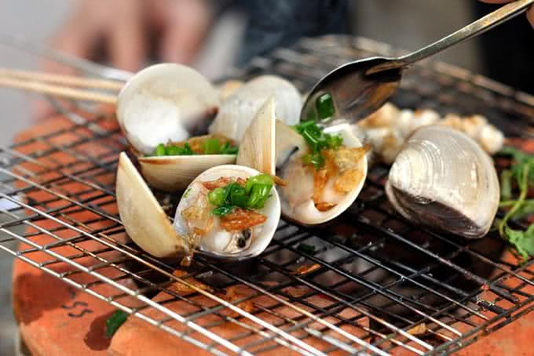

Món nghêu nướng thơm ngon mà bạn phải thử khi tới Cần Giờ
Nghêu là loại hải sản vô cùng phổ biển ở Cần Giờ. Loài hải sản dân dã này là nguyên liệu cho rất nhiều món ăn vô cùng đặc sắc. Nghêu hấp sả với cách chế biến đơn giản nhưng vẫn thu hút nhiều du khách bởi món ăn vẫn giữ nguyên được vị ngon ngọt nguyên chất của thịt nghêu béo múp. Ngoài ra, nghêu xào lá buôi với nghêu được hấp chín, tách ruột, xào nhanh với lá buôi và tỏi phi cũng là một món ăn được nhiều thực khách yêu thích.
Nguyên liệu làm món ngao nướng mỡ hành
-
Ngao ( Nghêu ) : 1 kg (tùy vào lượng người ăn cũng như khẩu phần ăn của mỗi gia đình Hành lá
Ớt tư loại cay
Gia vị khác: Dầu ăn, muối, hạt nêm, mì chính..
Cách làm ngao nướng mỡ hành chuẩn vị
Bước 1: Sơ chế nguyên liệu
Sơ chế ngao
- Món nghêu nướng mỡ hành này chắc chắn sẽ rất là hấp dẫn và nếu như tất cả các bạn biết sơ chế các nguyên liệu đúng cách nhất.
- Ngao ngay sau khi được mua về thì các bạn có thể ngâm chúng với nước vo gạo để có thể loại sạch bùn đất ngay trong miệng cùng với một vài lát ớt tươi. Ngâm trong một thời gian tầm khoảng 3-4 tiếng thì các bạn hãy rửa sạch ngao và để cho thật ráo nước.
Sơ chế nguyên liệu khác
-
Hành lá: Bạn hãy cắt bỏ bớt các phần rễ ngay sau đó hãy rửa sạch bằng nước sạch rồi bắt đầu thái nhỏ cho vào bát nhỏ.
-
Ớt: Bỏ cuống ngay sau đó thì các bạn hãy rửa sạch và nhớ rằng bạn nên bỏ hạt ( vì hạt ớt khá cay) và cắt ớt thành toàn bộ những miếng rất nhỏ rồi sau đó cho vào một bát rất nhỏ.
Bước 2: Chế biến hành lá
- Để các bạn có thể làm ngao nướng mỡ hành một đơn giản mà ngon trước tiên bạn hãy chế biến hành lá.
- Trộn đều hết tất cả hành lá cùng với một ít dầu ăn và 1 thìa cafe muối, 1 thìa cafe bột nêm. Cho hỗn hợp đó vào trong lò nướng và bắt đầu nướng khoảng gần 1 phút thì bỏ ra. Chú ý rằng là các bạn không nên để quá lâu trong lò vi sóng vì như thế thì hành có thể bị cháy hoặc là chín nhừ làm ngao (nghêu ) nướng sẽ bớt ngon đi.
Bước 3: Cách làm ngao nướng mỡ hành
Các bước chế biến một món nghêu nướng mỡ hành này cũng khá đơn giản. Chỉ bằng một vài các thao tác bạn đã có thể làm được một món ăn vừa lạ miệng vừa hấp dẫn này.
Trước tiên, tất cả các bạn hãy cho ngao vào vỉ nướng trước, nướng ngay cho tới khi ngao mở hết miệng ra thì bạn nhanh chóng đem ngay vỉ ngao ra khỏi bếp. Tiếp đến tất cả bạn dùng với con dao nhọn cậy đầu miệng ngao ra sau đó cho vào mỗi con ngao một thìa mỡ hành vào trong miệng ngao. Đặc biệt rằng là nếu như tất cả các bạn là người thích ăn cay thì bạn có thể cho vào miệng ngao một vài lát ớt nhỏ.
